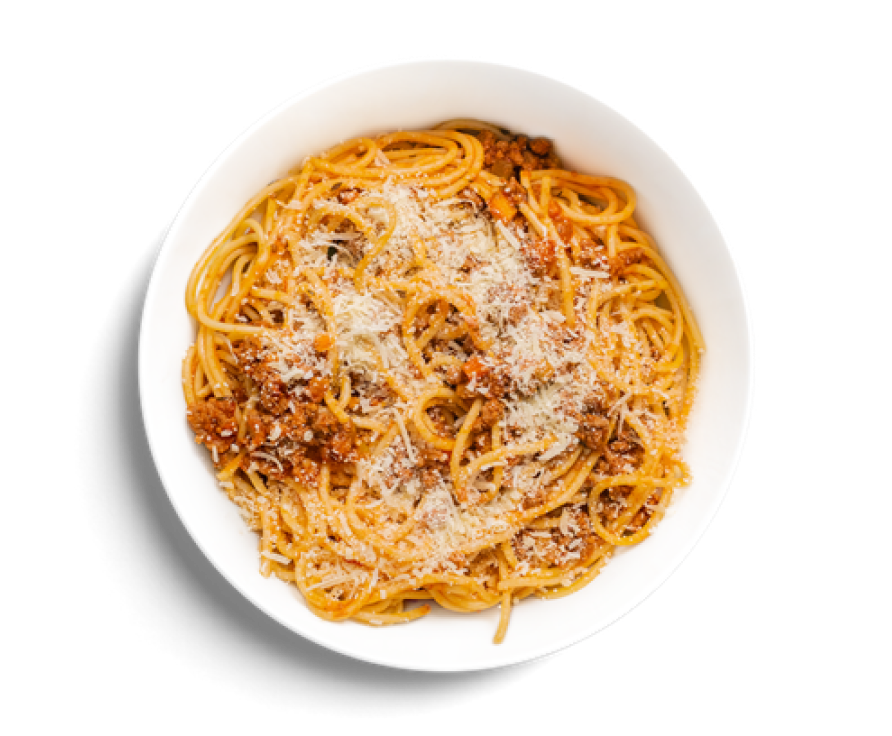

Pasta with beef and grated cheese
Pasta is a type of food typically made from an unleavened dough of wheat flour mixed with water or eggs, and formed into sheets or other shapes, then cooked by boiling or baking. Pasta is a staple food of Italian cuisine.
Contents
Total Weight 300g
Pasta
Beef
Parmesan
Sauce